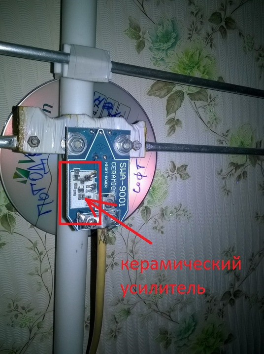
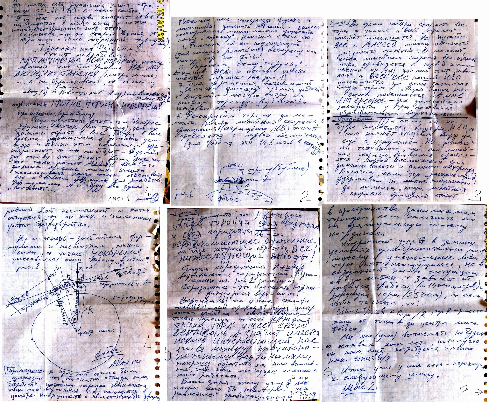
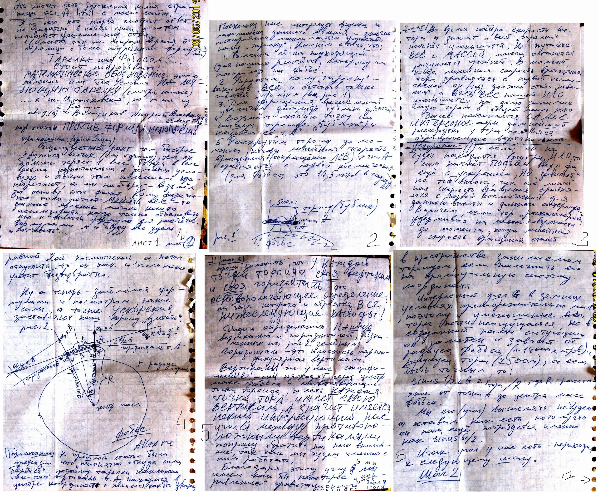
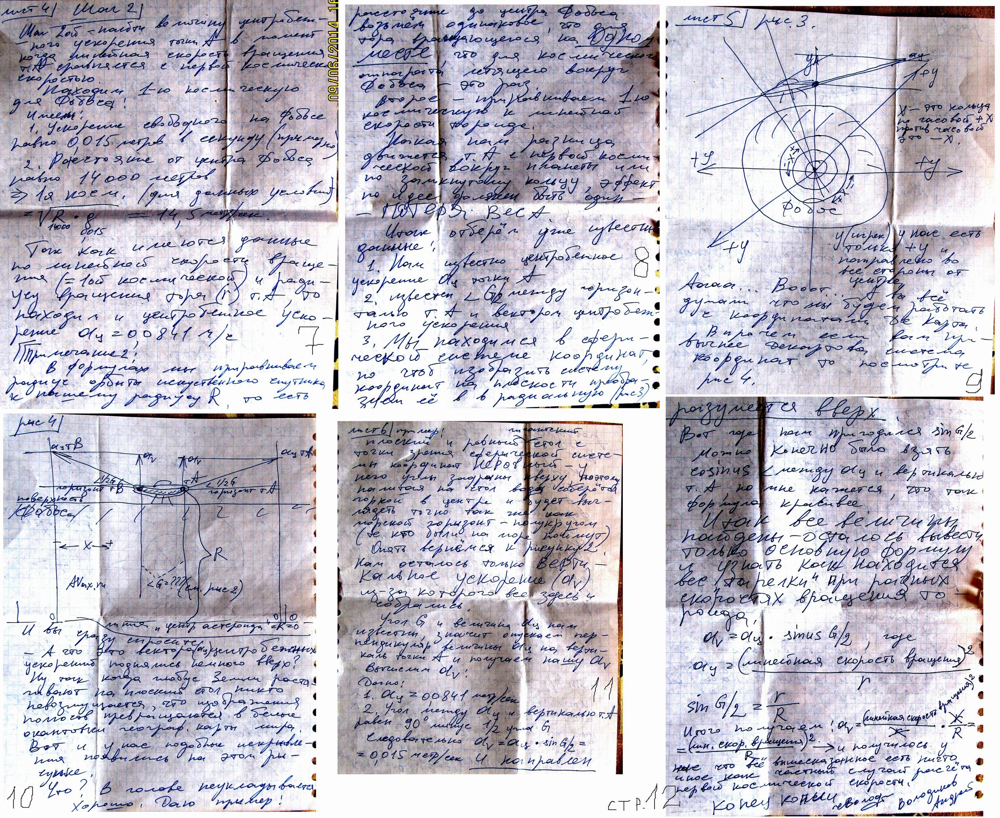
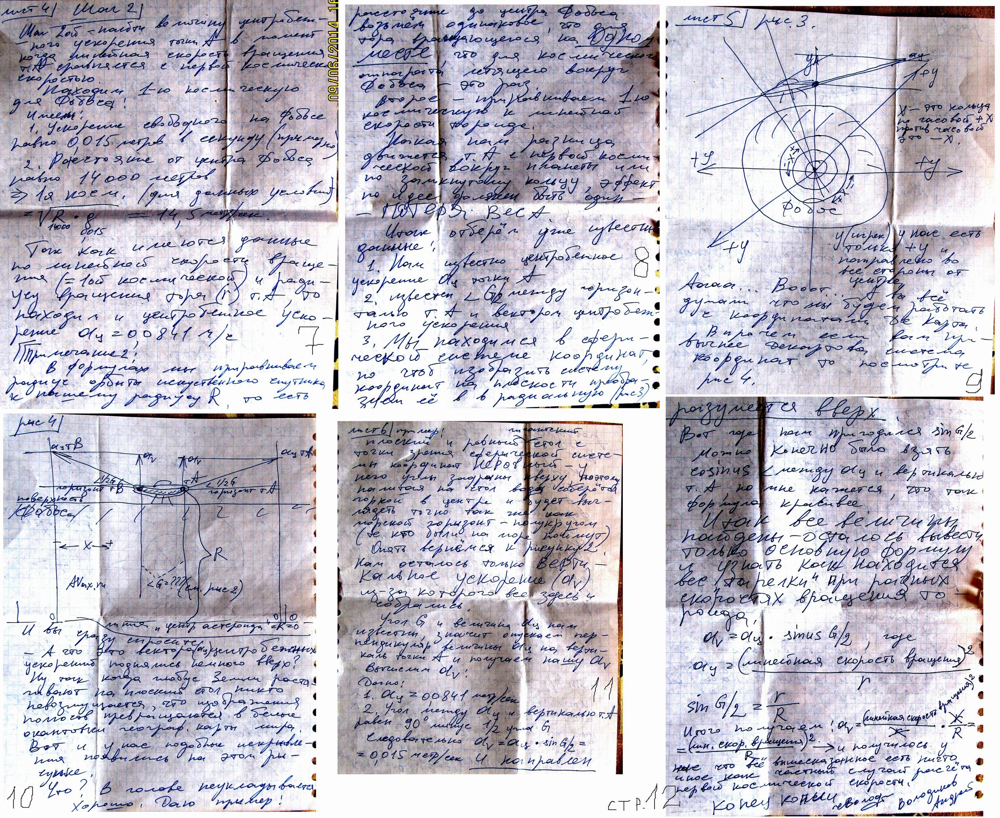
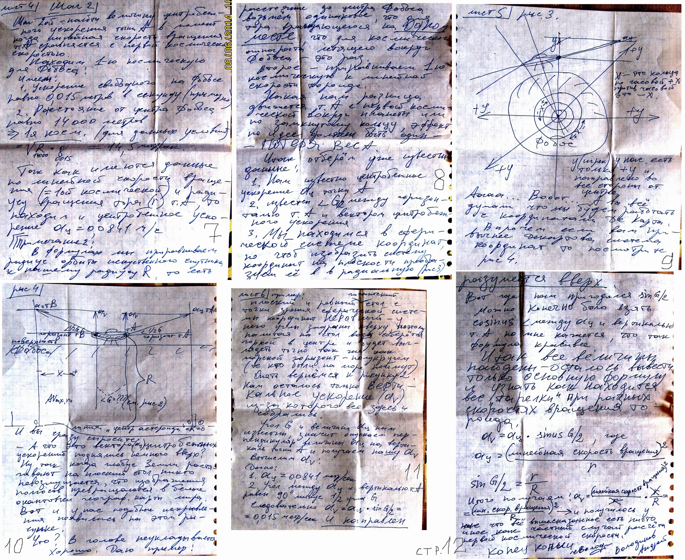
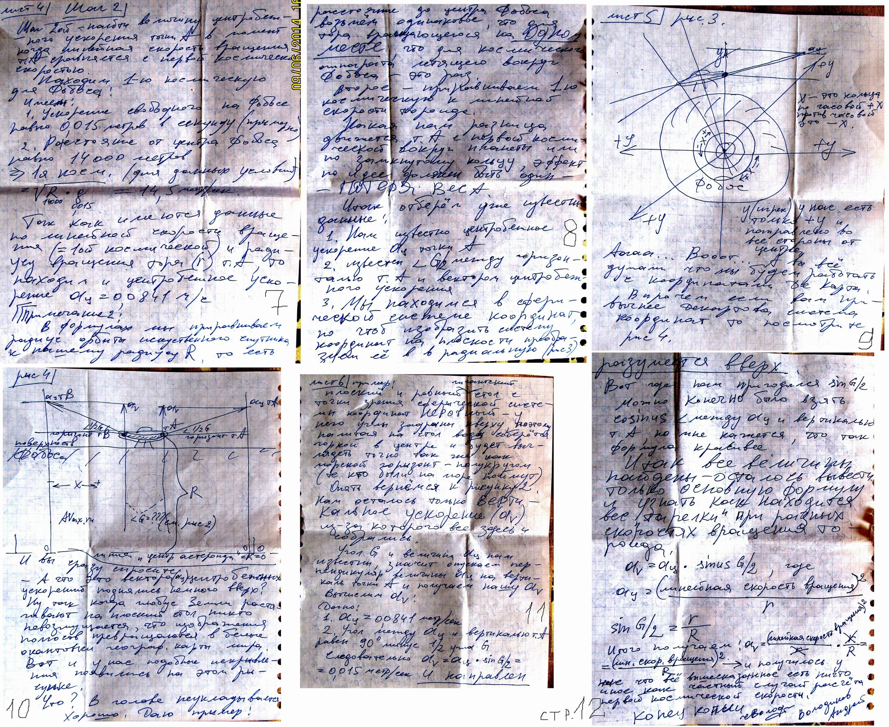

Планета Земля - фотообои метеоснимков из космоса с Метеор-М2
кстати: ПРОДАЮ "всё сразу" - диск с софтом+ант. усилитель(на фото)+свисток SDR
-но без БП и антенны, тк они великоваты для бандероли.
...хотя если Вы живёте в моём городе
то и их забирайте! (gmail ищите на стр "ссылки и автор")
Итак, что надо для приёма с метеоспутников
1. надо купить USB_T2 ТВприёмник
ну этой фигни в каждом городе до... непроблема
2. и главное - найти усилитель сделаный на керамике
типа вот такого

SWA-9001
он В РАЗЫ меньше шумит!
ещё - может здорово гнать помехи блок питания компа!
Фильтр на 220 непомешает
3. антенна - обычная УКВ... 4 элемента.
Ещё: огромной проблемой могут стать помехи с телевышки!!
мне повезло - она с др стороны дома и почти немешает своими уквэхами.
далее ищем в инете и ставим СОФТ
1 sdrsharp - ну кудаж без неё...
2 zadig - драйвер
3 плагин Метеор для sdrsharp
4 может пригодится ещё LRPT_Decoder_v50
5 NET Framework версия 3.5 - вот тут засада!!
Без этой хрени многие плугины для sdrsharp нехотят работать!!!
именно 3.5!!! если 4.0 стоит то не факт что заработают!
чуть незабыл - нам надо знать, когда над головой он пролетит.
Летает много их, но нам нужен именно MeteoR-M2
для этого есть программа Orbitron.
кстати по орбитрону я ждал и увидел ISS т е МКС !
Весьма
впечатляет пролёт станции !!!
...далее высовываем руку в окно и... видим планету земля как космонавты.
ужасает размер серых пятен - это города!!!!!
 

 


ссылочки по теме:
http://www.hobitus.com/ сайт со свежими картинками с NOAA
https://m.vk.com/sputnikmeteo?offset=5&own=1#posts со свежими картинками с Метеор-М2
ну и на гугле поищите по словам: NOAA MeteoR-M2 137.1MHz метеоснимки

 
